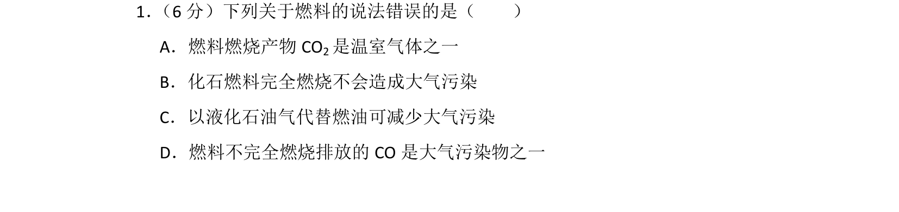
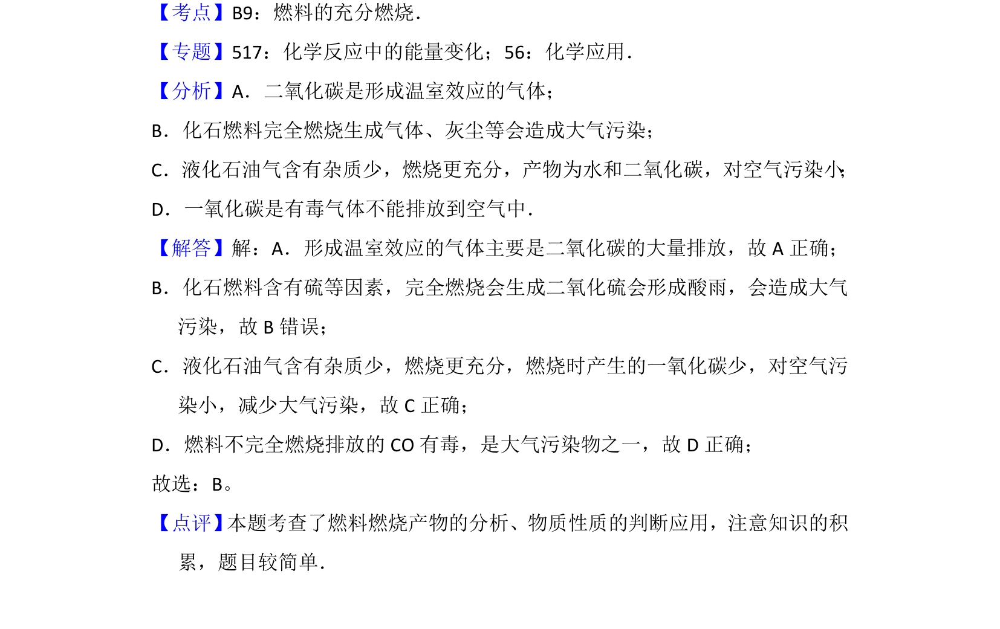

考点：燃料燃烧 大气污染 温室气体

燃料燃烧产物及对环境影响的判断

📄 原 PDF 第 1 页：
素材/真题/吉林/2008-2024·（吉林）化学高考真题/2016年高考化学试卷（新课标Ⅱ）（解析卷）.pdf
1． （6分）下列关于燃料的说法错误的是（ ） A．燃料燃烧产物CO 2是温室气体之一 B．化石燃料完全燃烧不会造成大气污染 C．以液化石油气代替燃油可减少大气污染 D．燃料不完全燃烧排放的CO是大气污染物之一
【考点】B9：燃料的充分燃烧．菁优网版权所有 【专题】517：化学反应中的能量变化；56：化学应用． 【分析】A．二氧化碳是形成温室效应的气体； B．化石燃料完全燃烧生成气体、灰尘等会造成大气污染； C．液化石油气含有杂质少，燃烧更充分，产物为水和二氧化碳，对空气污染小 ； D．一氧化碳是有毒气体不能排放到空气中． 【解答】解：A．形成温室效应的气体主要是二氧化碳的大量排放，故A正确； B．化石燃料含有硫等因素，完全燃烧会生成二氧化硫会形成酸雨，会造成大气 污染，故B错误； C．液化石油气含有杂质少，燃烧更充分，燃烧时产生的一氧化碳少，对空气污 染小，减少大气污染，故C正确； D．燃料不完全燃烧排放的CO有毒，是大气污染物之一，故D正确； 故选：B。 【点评】 本题考查了燃料燃烧产物的分析、物质性质的判断应用，注意知识的积 累，题目较简单．